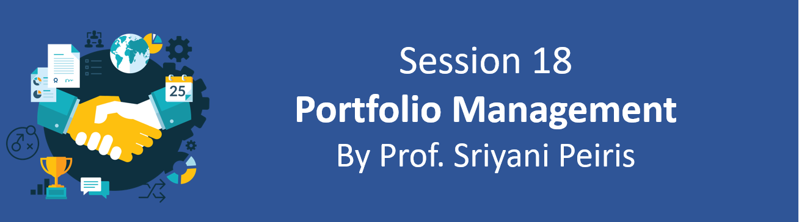
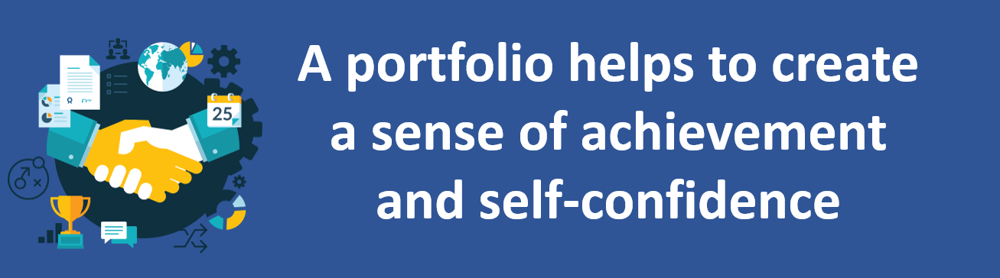
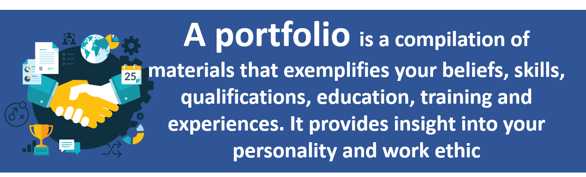

Session Details
- Date: 20th November 2020
- Topic: Portfolio Management
- Resource Person: Prof. Sriyani Peiris
Topics covered in this session
- What is a Portfolio?
- Different Types of Portfolios
- What Should be Included in a Portfolio?
- The Benefits of Developing a Portfolio
- The Challenges of Developing a Portfolio
- Portfolio Formats
What is a Portfolio?
A portfolio is a compilation of materials that exemplifies your beliefs, skills, qualifications, education, training and experiences. It provides insight into your personality and work ethic.
Different Types of Portfolios
- Personal portfolio
- Dossier portfolio
- Reflective portfolio
- Employment portfolio
- Assessment portfolio
What Should be Included in a Portfolio?
- Statement of Originality: A paragraph stating that this is your work and that it is confidential. It should also indicate if any parts of the portfolio should not be copied.
- Work Philosophy: A brief description of your beliefs about yourself and the industry.
- Career Goals: Your professional goals for the next five years.
- Resume: (add Resume Writing link)
- Skill Areas: Identify three to five of the major skill set areas you have that would be important for someone in your career field to have. Examples include: Management, Computer Skills, Public Relations, Leadership, Accounting, Communications, and Customer Service.
The Benefits and Challenges of Developing a Portfolio
Benifits
- Created a sense of achievement and self-confidence
- Was an opportunity to conduct an in-depth self-evaluation
- Developed my skills of reflection
- Developed greater awareness of the context I work in
- Made me think about where I want to go and what I need to develop
- Strengthened my understanding of my development as a practitioner
- Helped me know and be confident about my strengths
Challenges
- The portfolio could become simply a paper trail
- Constructing and assembling the portfolio is time-consuming
- Very ‘messy’ at the start when trying to find a format
- The portfolio can create an atomistic approach – looking at different tasks without making connections
- The portfolio can focus on the functional aspects of practice without looking at the ‘big picture